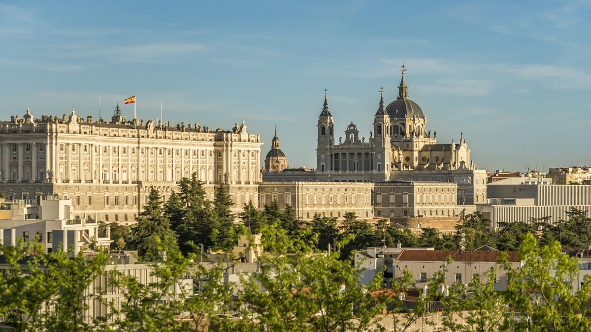
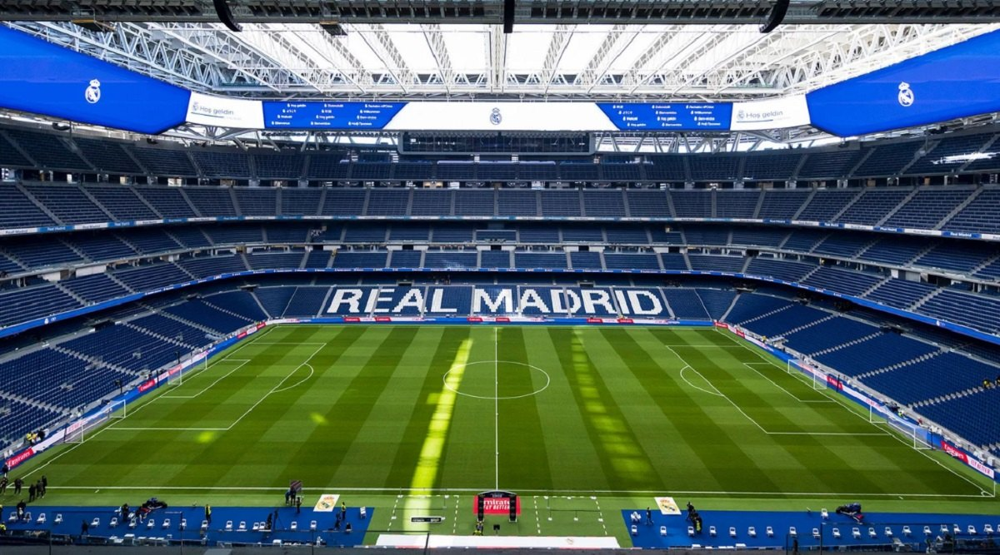

About Madrid
Welcome to Madrid
Madrid, the capital of Spain, is a vibrant city of around 3.4 million people where world-class research sits alongside centuries of history. Its elegant center is a showcase of majestic architecture — from the grand Royal Palace and the Almudena Cathedral to the monumental Gran Vía, the arcaded Plaza Mayor and the tree-lined boulevards of the Paseo del Prado — much of it within comfortable walking distance.
The city is renowned for its world-class museums — the Prado, the Reina Sofía and the Thyssen-Bornemisza — and for green escapes such as the Parque del Buen Retiro and Casa de Campo. The surrounding region is home to several UNESCO World Heritage sites, with many more destinations only a short train ride away.
Beyond its monuments, Madrid is a city made for enjoying. It offers a celebrated food scene — from historic markets and neighborhood tapas bars to Michelin-starred kitchens — lively plazas and terraces, and a famously vibrant nightlife, all served by an extensive and affordable metro that makes getting around effortless. For ideas on what to see, eat and do, the official city guide esmadrid.com is an excellent place to start.
Madrid is also one of the world's great football cities: it is home to Real Madrid and the Santiago Bernabéu stadium, as well as Atlético de Madrid, and a match makes an easy and memorable addition to a conference stay.


